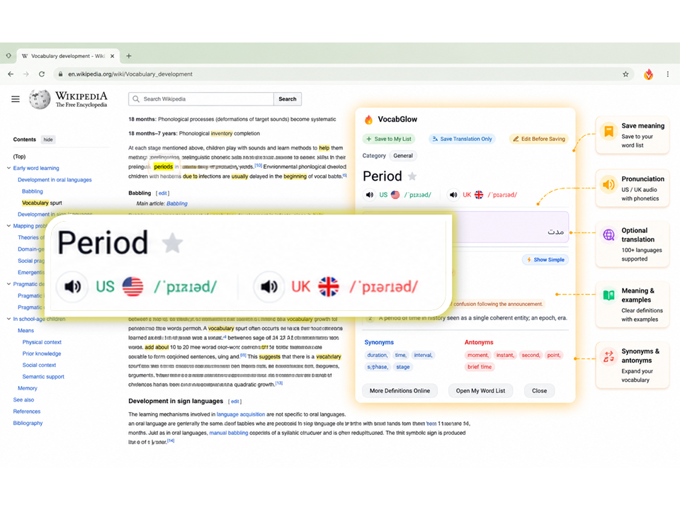
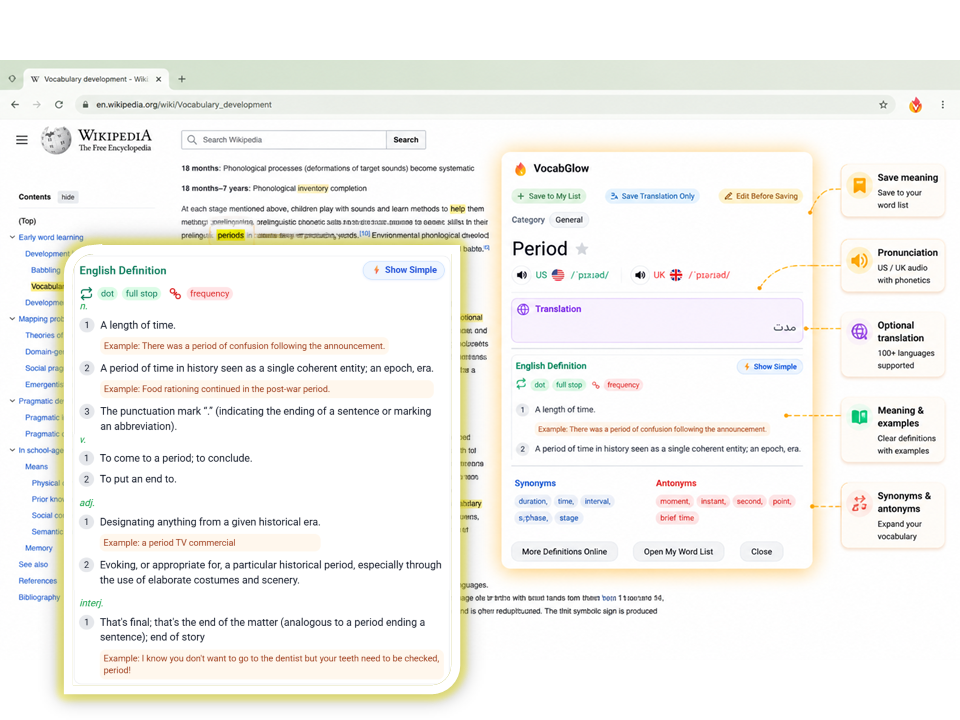
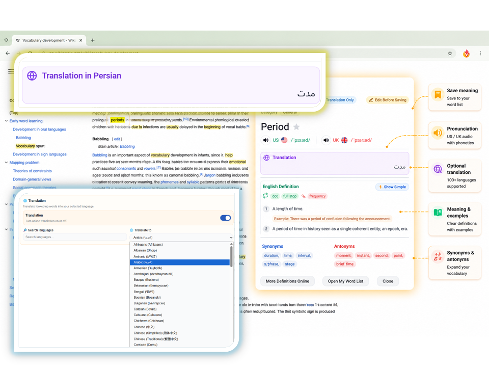
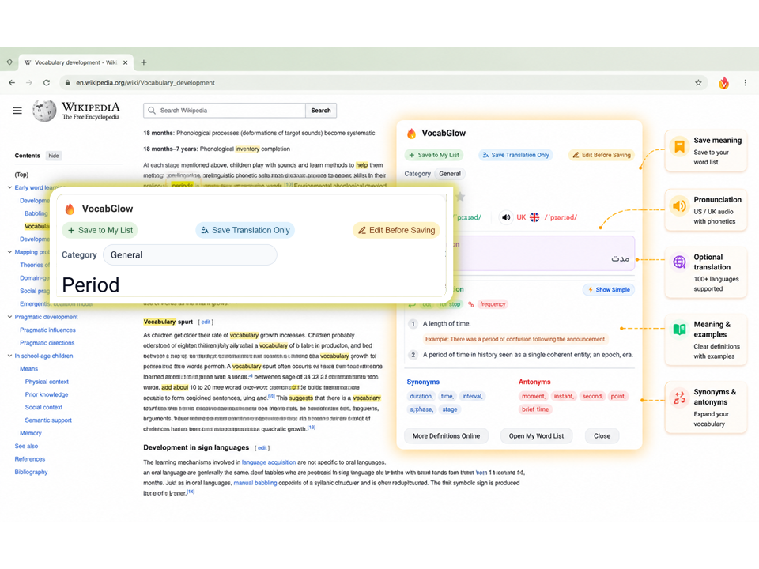
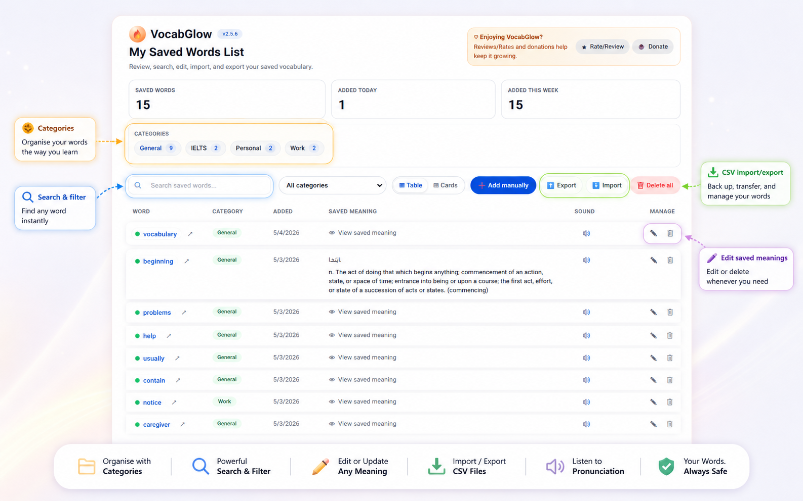
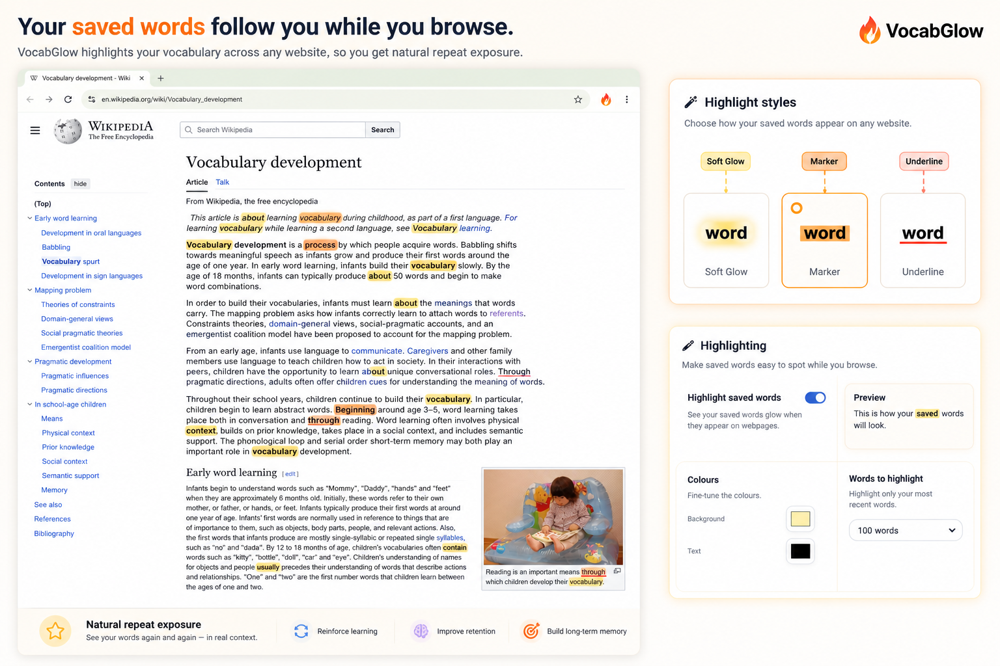
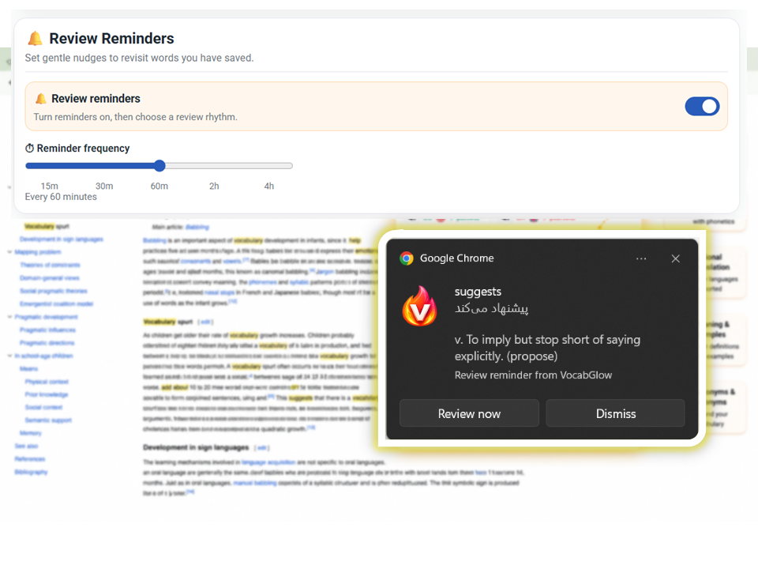
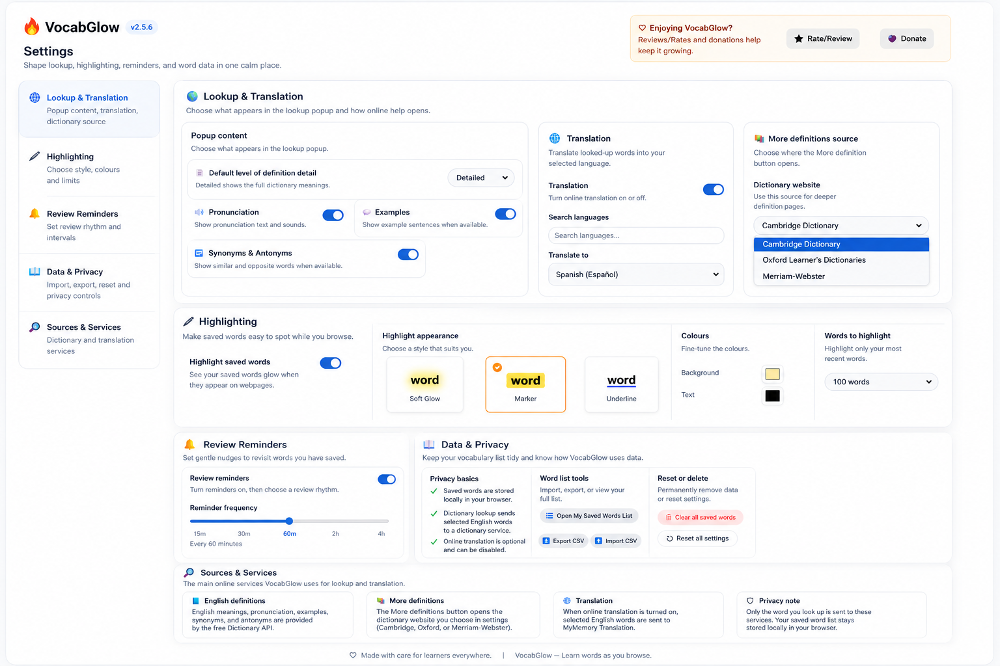

Instant lookup with helper icon and right-click
Look up words instantly using the helper icon or right-click context menu, keeping you focused on reading without interrupting your flow.

Features
Each feature is designed to stay useful during normal browsing instead of forcing a separate study workflow.
Look up words instantly using the helper icon or right-click context menu, keeping you focused on reading without interrupting your flow.
Hear accurate pronunciation with US and UK phonetic transcriptions and audio playback for clear understanding.

Get comprehensive word information including definitions, usage examples, synonyms, and antonyms for deeper understanding.

Translate words into over 100 languages when needed, with the option to turn translation off for English-only learning.

Save full results, summaries, translation only, or edited meanings to customise how you build your vocabulary collection.

Organise words into categories with search, filtering, and a full manager for editing, deleting, manual lookups, and CSV import/export.

Highlight saved words across the web with Soft Glow, Marker, Underline styles, custom colours, and limits (25/50/100/200).

Use reminders to review vocabulary and track progress with popup saved-word statistics.

Configure dictionary sources (Cambridge, Oxford Learner's, Merriam-Webster), popup content, and organise settings for your preferences.
